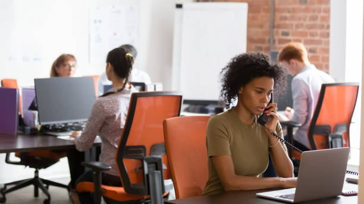
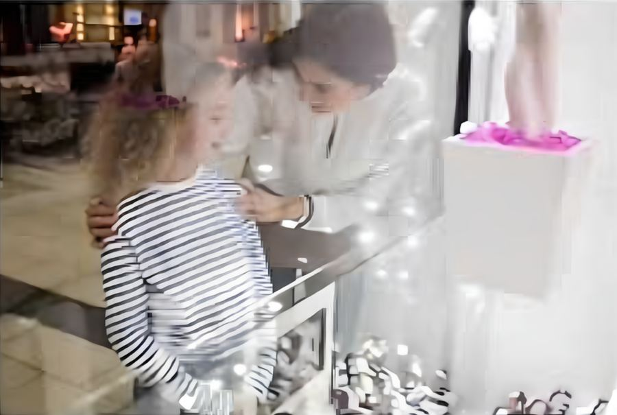
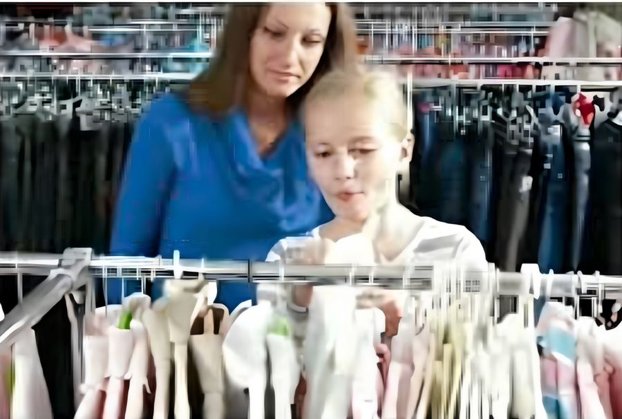
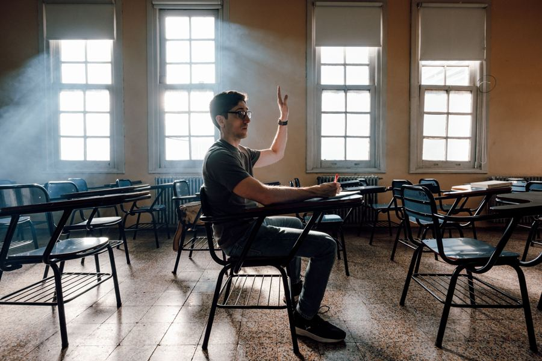

Aptis Speaking
Part 1: In this part, I am going to ask you three short questions about yourself and your interests. You will have 30 seconds to reply to each question.
1. Tell me the last time/a time you went to the movies.
=> Last month, I went to the movies with my friends. We watched an action movie and had a great time. We bought some snacks and enjoyed the movie together. It was a fun way to relax after a busy week.
2. Please tell me about your typical day.
=> I usually get up at 7 a.m. I go to work, and in the evening I relax at home. In the afternoon, I usually have lunch with my colleagues. I feel this daily routine helps me stay organized.
3. Describe your journey here today.
=> My journey was good. The traffic was not very busy. I took the bus and arrived a few minutes early. It made me feel relaxed before the test.
Part 2: In this part, I'm going to ask you to describe a picture. Then I will ask you two questions about it. You will have 45 seconds for each response.
 |
1. Describe the picture => In this picture, I can see some people in an office. A woman is talking on the phone and using a laptop. Other people are working at their desks. They look busy. I think they are working together. |
2. What is your impression of the people working here?
=> I think they are hardworking and professional. They look busy but focused on their work. They seem to work well as a team and help each other. I think their positive attitude makes the workplace better.
3. What do you think are the most important qualities of a good colleague?
=> A good colleague should be kind, helpful and responsible. They should also work well with others. For example, a colleague who listens carefully makes teamwork easier. I always try to be this kind of person myself.
Part 3: In this part, I'm going to ask you to compare two pictures, and I will then ask you two questions about them. You will have 45 seconds for each response.
1. Tell me what you can see in these two pictures.


=> The two pictures show people shopping in different ways.
There are some differences between the two pictures. Picture 1 shows a woman and a child buying clothes or items while picture 2 shows a woman and a child shopping for clothes.
The people in picture 1 are looking at a shop and the people in picture 2 are choosing clothes.
There are some similarities between the two pictures. The people in both pictures are shopping together. Both women seem to enjoy spending time with their children while shopping. This shows that shopping can also be a fun family activity.
2. Why do some people prefer to buy expensive items?
=> Some people buy expensive items because they are better quality and last longer. They also look more beautiful. Some people also feel proud when they own expensive things. It can make them feel more confident.
3. Do you think online shopping will completely replace traditional markets in the future?
=> No, I don't think so. Many people still like shopping in traditional markets because they can see and try the products before buying them. Also, shopping in person lets people meet friends and enjoy the atmosphere. This experience is hard to get online.
Part 4: Part 4: In this part, I'm going to show you a picture and ask you three questions. You will have 1 minute to think about your answers before you start speaking. You will have 2 minutes to answer all three questions.

Tell me about a time you asked a question.
Why do some people feel nervous to ask questions in public?
How does asking questions help students learn better at school?
=> Regarding the first question, today I'm going to talk about a time I asked a question. Last week, I asked my teacher about an English grammar lesson. She explained it clearly, and I understood it better. I felt a bit shy before asking, but I was glad I did it.
Turning to the second question, some people feel nervous because they are afraid of making mistakes. They also worry that other people may laugh at them. This fear often stops them from getting the help they need.
About the last question, I think asking questions helps students learn better because they can understand the lesson more clearly. It also helps them remember new knowledge. It also makes lessons more interesting for the whole class.